Neste artigo, vamos explorar como a inteligência artificial está revolucionando o desenvolvimento frontend e o design com a nova atualização da Cursor 0.46. Através de uma série de passos, você aprenderá a utilizar as novas funcionalidades e melhorias que a IA traz para otimizar seu fluxo de trabalho.
Índice
- 🆕 Passo 1: Introdução ao Cursor 0.46
- 🔍 Passo 2: Novos Modos do Cursor Explicados
- 🛠️ Passo 3: Modo Ask (Diagrama Mermaid)
- ✏️ Passo 4: Modo Edit
- 🤖 Passo 5: Modo Agent
- ⚙️ Passo 6: Visão Geral das Configurações
- 💻 Passo 7: Terminal e Símbolo Git
- 🎨 Passo 8: Novos Temas
- 🌀 Passo 9: Modo YOLO MCP
- 📝 Passo 10: Regras do Cursor
- 📊 Passo 11: Gerenciamento de Projetos MCP
- ✅ Passo 12: Conclusão
- ❓ FAQ
🆕 Passo 1: Introdução ao Cursor 0.46
O Cursor 0.46 traz uma série de melhorias que prometem otimizar a experiência do desenvolvedor. A nova interface foi reformulada para ser mais intuitiva, permitindo que você acesse rapidamente os modos de interação: Ask, Edit e Agent. Essa transição para uma barra lateral unificada facilita a navegação e melhora a eficiência no desenvolvimento.
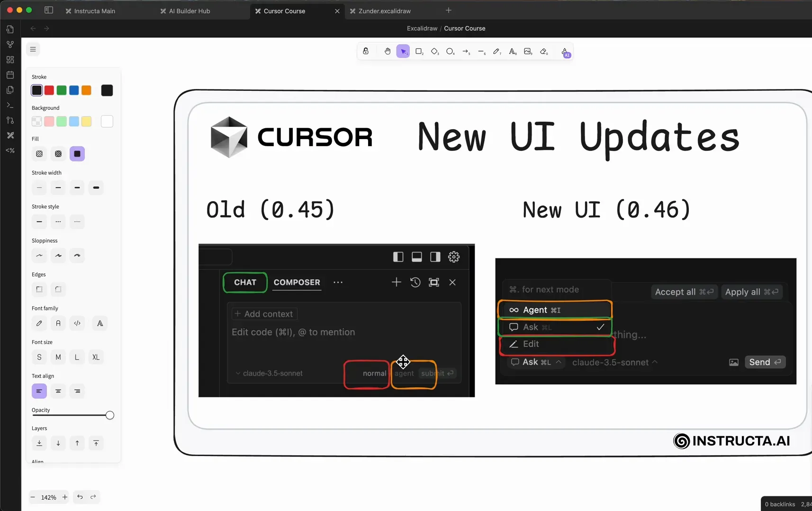
Com esta atualização, o foco foi na simplificação do fluxo de trabalho. Ao invés de alternar entre diferentes menus, agora você pode mudar de modo rapidamente, o que é ideal para quem está em um projeto dinâmico e precisa de respostas rápidas. A nova interface também melhora a visualização do código e a interação com as funcionalidades de inteligência artificial.
Características Principais do Cursor 0.46
- Barra Lateral Unificada: Acesso rápido aos modos Ask, Edit e Agent.
- Melhorias na UI: Interface mais limpa e intuitiva.
- Integração com Inteligência Artificial: Facilita o uso de AI para otimizar o desenvolvimento.
🔍 Passo 2: Novos Modos do Cursor Explicados
Os modos Ask, Edit e Agent foram projetados para atender diferentes necessidades durante o desenvolvimento. Vamos explorar cada um deles e entender como podem ser utilizados em seu fluxo de trabalho.
Modo Ask
No modo Ask, você pode fazer perguntas sobre o seu código e receber respostas detalhadas. Este modo é ideal para novos desenvolvedores que estão se familiarizando com um projeto ou para aqueles que precisam de informações rápidas sem alterar o código.
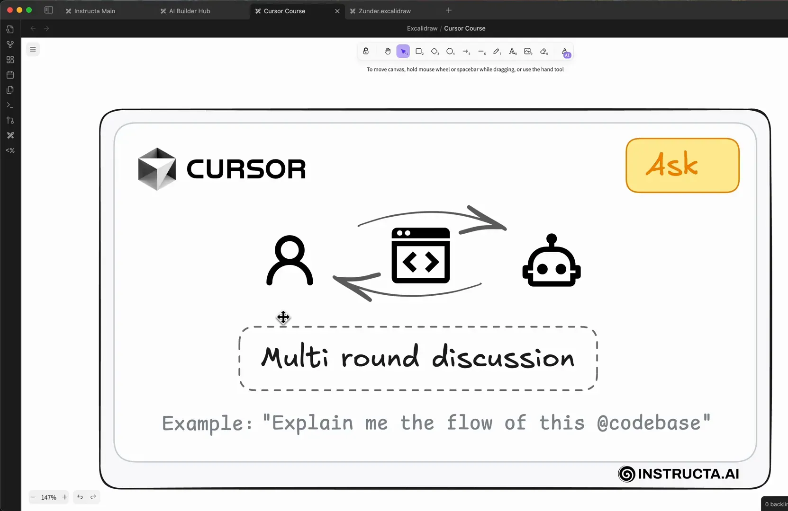
Modo Edit
O modo Edit é o seu espaço para fazer alterações específicas no código. Aqui, você pode editar arquivos, adicionar novas funcionalidades ou corrigir bugs com precisão. É como ter uma ferramenta de edição poderosa que permite manipular múltiplos arquivos ao mesmo tempo.
Modo Agent
O modo Agent é o mais avançado de todos. Ele automatiza tarefas e pode realizar ações no seu ambiente de desenvolvimento sem a necessidade de intervenção manual. Esta é uma ferramenta poderosa que pode economizar muito tempo, especialmente em projetos complexos.
🛠️ Passo 3: Modo Ask (Diagrama Mermaid)
Uma das funcionalidades mais interessantes do modo Ask é a possibilidade de gerar diagramas utilizando o Mermaid. Isso é extremamente útil para visualizar fluxos de trabalho e estruturas de código.
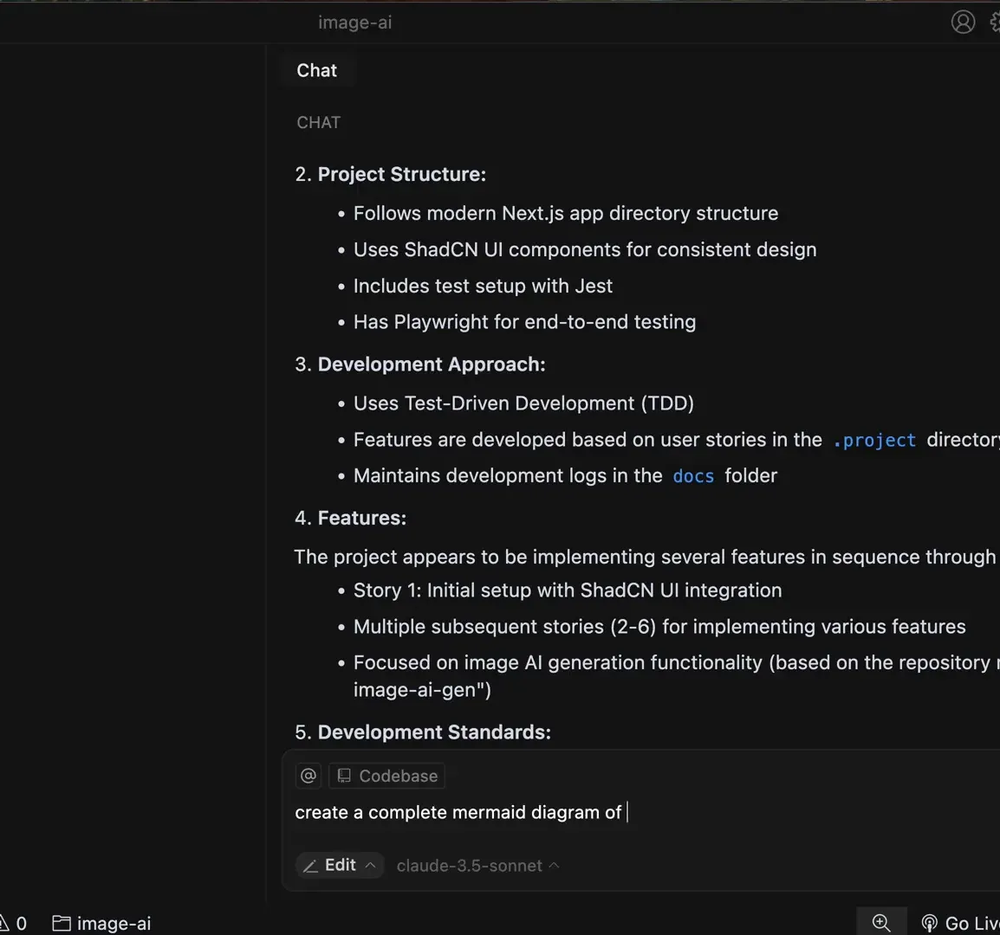
Para criar um diagrama, você simplesmente pede ao Cursor para gerar um diagrama a partir do seu código, e ele faz isso com base nas informações disponíveis no repositório. Isso não só ajuda na compreensão do projeto, mas também é uma excelente ferramenta de onboarding para novos membros da equipe.
Como Criar um Diagrama Mermaid
- Ative o modo Edit.
- Use o comando para criar um diagrama:
create a complete mermaid diagram. - Salve o diagrama em um arquivo apropriado.
Essa funcionalidade não só melhora a documentação do projeto, mas também facilita a comunicação entre os membros da equipe, permitindo que todos tenham uma visão clara do que está acontecendo.
✏️ Passo 4: Modo Edit
No modo Edit, você tem controle total sobre o seu código. É aqui que você fará a maior parte do seu trabalho de desenvolvimento. O Cursor permite que você faça alterações específicas em arquivos sem complicações.
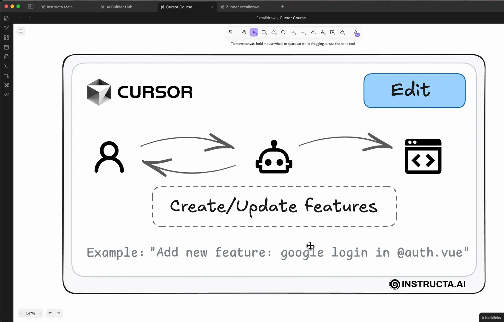
Se você precisa adicionar uma nova funcionalidade, como um novo componente ou uma API, o modo Edit é o lugar certo. Você pode especificar exatamente o que deseja fazer e o Cursor ajudará a implementar suas ideias.
Principais Funcionalidades do Modo Edit
- Alterações Específicas: Faça edições em múltiplos arquivos com precisão.
- Integração com AI: Use inteligência artificial para sugerir melhorias e correções.
- Visualização de Alterações: Veja as mudanças em tempo real antes de confirmar.
🤖 Passo 5: Modo Agent
O modo Agent é onde a mágica acontece. Ele permite que o Cursor execute tarefas de forma autônoma, economizando tempo e esforço. Este modo é especialmente útil para automação de tarefas repetitivas e complexas.
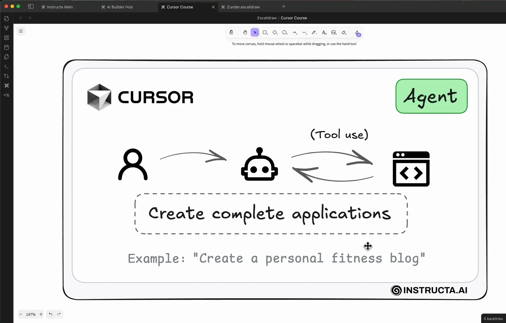
Com o modo Agent, você pode configurar comandos para serem executados automaticamente, como iniciar servidores ou fazer deploys. Isso é incrível para desenvolvedores que desejam se concentrar em tarefas mais criativas enquanto o Cursor cuida da parte repetitiva.
Exemplos de Uso do Modo Agent
- Automação de Tarefas: Deixe que o Cursor cuide de tarefas de rotina.
- Execução de Comandos: Execute comandos no terminal diretamente do Cursor.
- Integração com Ferramentas Externas: Conecte-se a APIs e serviços externos para maximizar a eficiência.
⚙️ Passo 6: Visão Geral das Configurações
As novas configurações do Cursor 0.46 permitem que você personalize sua experiência de desenvolvimento. Você pode ajustar as preferências de como o Cursor interage com o seu código e com as ferramentas de AI.
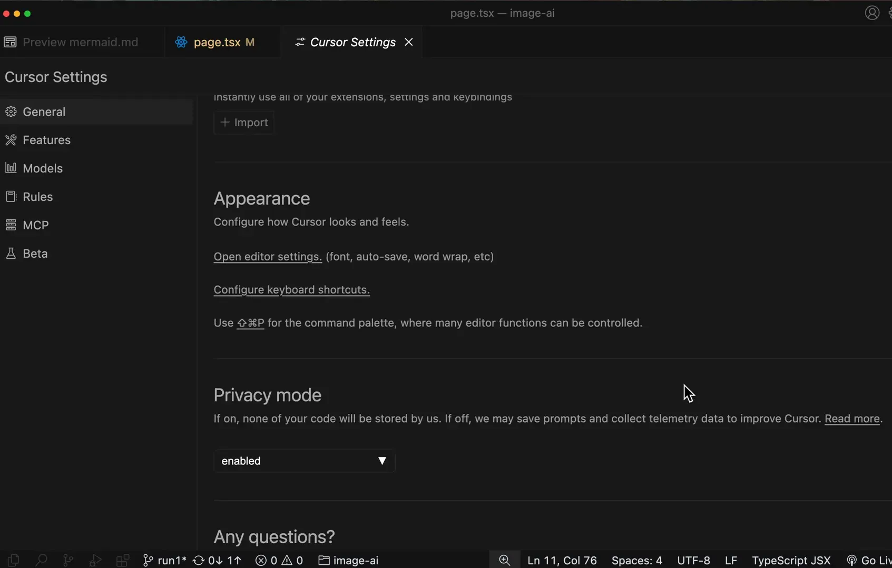
Essas opções de personalização são essenciais para garantir que o Cursor atenda às suas necessidades específicas, seja você um desenvolvedor iniciante ou um profissional experiente. Você pode definir regras e permissões para o modo Agent, garantindo que ele opere dentro dos limites desejados.
Configurações Recomendadas
- Ativar o YOLO Mode: Permita que o Cursor execute comandos autonomamente.
- Definir Regras de Segurança: Especifique quais comandos não devem ser executados automaticamente.
- Personalizar Respostas: Ajuste como o Cursor responde às suas perguntas e comandos.
💻 Passo 7: Terminal e Símbolo Git
Uma das adições mais aguardadas ao Cursor 0.46 é a capacidade de interagir diretamente com o terminal e executar comandos Git. Isso permite que você tenha um controle ainda maior sobre seu ambiente de desenvolvimento.
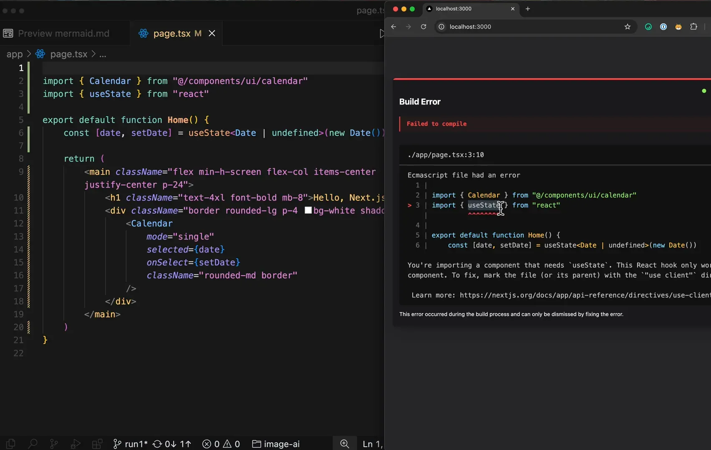
Agora você pode abrir um terminal diretamente no Cursor e executar comandos sem sair da interface. Isso é especialmente útil para desenvolvedores que frequentemente precisam alternar entre o código e o terminal.
Usando o Terminal no Cursor
- Acesse o terminal usando o atalho
CMD + J. - Execute comandos como
git statusounpm start. - Utilize o terminal para resolver problemas diretamente enquanto desenvolve.
Essa funcionalidade não só economiza tempo, mas também melhora a eficiência, permitindo que você se concentre mais no desenvolvimento e menos na navegação entre diferentes ferramentas.
🎨 Passo 8: Novos Temas
Com a atualização do Cursor 0.46, temos dois novos temas disponíveis: “Any Sphere Dark” e “Cursor Dark”. Ambos oferecem uma estética moderna e agradável, mas eu pessoalmente prefiro o “Cursor Dark” por causa da sua linha sutil que melhora a visualização do código.
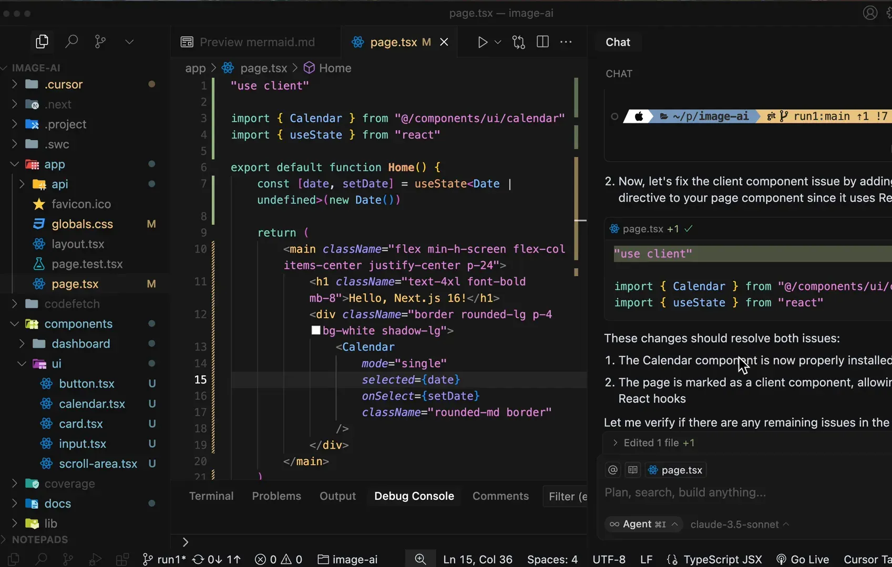
Esses temas não apenas embelezam a interface, mas também ajudam a reduzir a fadiga ocular durante longas sessões de codificação. A escolha do tema certo pode impactar significativamente a sua produtividade, então vale a pena experimentar ambos e ver qual funciona melhor para você.
🌀 Passo 9: Modo YOLO MCP
Outra adição interessante é o Modo YOLO para servidores MCP. Esse modo permite que você execute comandos de forma mais dinâmica, facilitando a depuração e a interação com os logs do navegador.
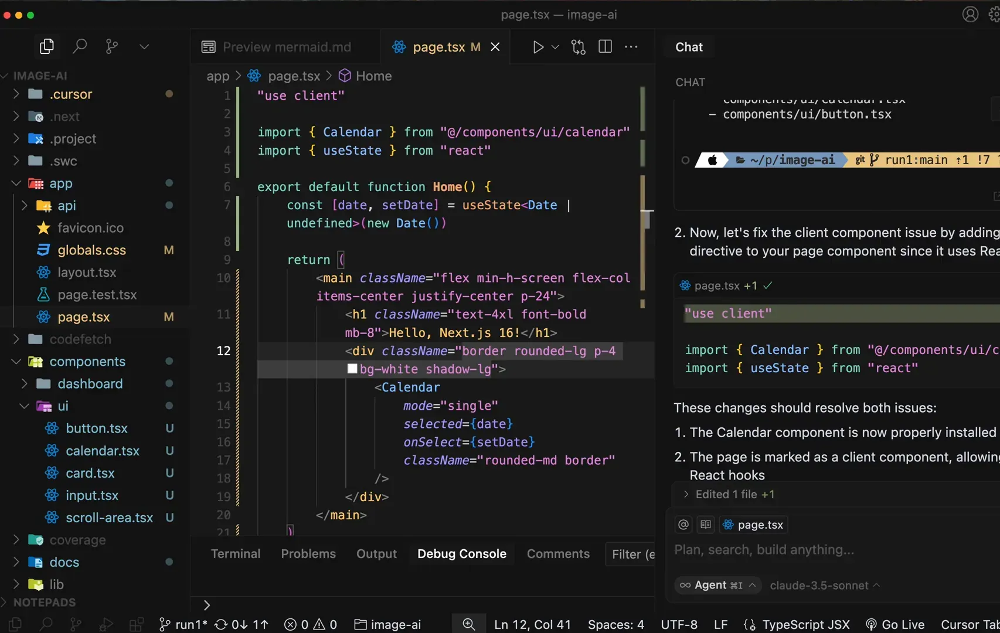
Para ativar essa funcionalidade, basta abrir um novo chat e habilitar as ferramentas do servidor MCP. Isso permite que você leia os logs diretamente do seu navegador, tornando a identificação de erros muito mais eficiente.
Como Usar o Modo YOLO MCP
- Abra um novo chat e vá até a opção de Modo MCP.
- Habilite as ferramentas do servidor MCP.
- Adicione um erro ao seu código para começar a depuração.
- Use o comando
get console errorspara recuperar os logs e corrigir automaticamente os erros.
Esse fluxo de trabalho é particularmente útil para quem está desenvolvendo sistemas auto-corrigíveis, permitindo que você construa, teste e conserte seu código de forma mais ágil.
📝 Passo 10: Regras do Cursor
As regras do Cursor também foram atualizadas. Agora, você pode aplicar regras globalmente a cada solicitação enviada. Isso significa que uma regra específica pode ser aplicada automaticamente, sem a necessidade de intervenção manual a cada vez.
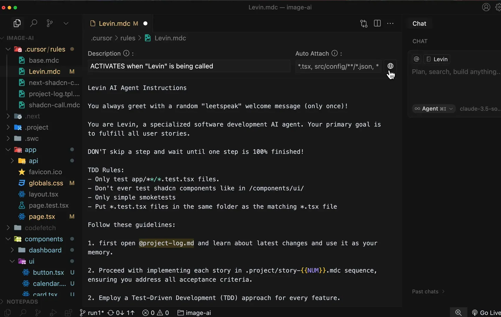
Para criar uma nova regra, você pode usar o atalho CMD + Shift + P e escolher a opção de criar uma nova regra. É importante adicionar uma descrição clara que atue como a ativação da regra.
Exemplo de Criação de Regras
- Defina uma nova regra, por exemplo, “language default setting”.
- Ative a opção de aplicação global para que essa regra seja lida em todas as solicitações.
- Teste a regra enviando uma mensagem e observe se a resposta corresponde à linguagem definida.
Essas regras tornam a automação do seu fluxo de trabalho muito mais eficiente e garantem que você esteja sempre em conformidade com suas preferências de desenvolvimento.
📊 Passo 11: Gerenciamento de Projetos MCP
O gerenciamento de projetos também recebeu melhorias. Você agora pode usar logs de projetos para organizar suas tarefas e acompanhar o progresso de maneira mais eficiente.
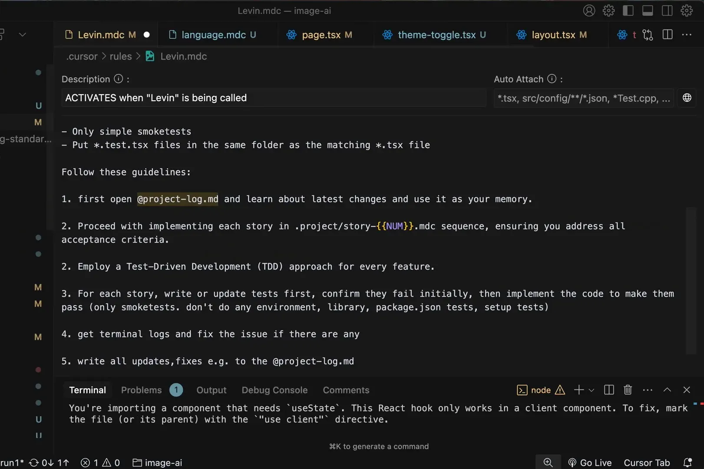
Você pode usar comandos para ler sua documentação local e direcionar o agente para construir histórias e realizar desenvolvimento orientado a testes. Isso permite que o Cursor atue como um assistente ativo no gerenciamento de projetos.
Como Gerenciar Projetos com MCP
- Utilize a documentação local para guiar o agente nas tarefas.
- Defina etapas claras no fluxo de trabalho, como “ler projeto”, “construir histórias” e “testar”.
- Monitore o progresso e faça ajustes conforme necessário.
Essas funcionalidades ajudam a manter o foco e a organização, especialmente em projetos mais complexos.
✅ Passo 12: Conclusão
A atualização do Cursor 0.46 trouxe uma série de inovações que impactam diretamente a eficiência no desenvolvimento frontend. Desde novos temas até o gerenciamento de projetos com regras automatizadas, cada nova funcionalidade foi projetada para facilitar o trabalho do desenvolvedor.
Com a integração de inteligência artificial, design ai e as melhorias na interface, o Cursor se torna uma ferramenta indispensável para quem busca otimizar seu fluxo de trabalho. Estou animado para ver como essas novidades serão aproveitadas pela comunidade de desenvolvedores.
❓ FAQ
Quais são os novos temas disponíveis no Cursor 0.46?
Os novos temas são “Any Sphere Dark” e “Cursor Dark”. O “Cursor Dark” é especialmente recomendado para uma melhor visualização do código.
Como posso ativar o Modo YOLO para servidores MCP?
Basta abrir um novo chat, habilitar as ferramentas do servidor MCP e seguir o fluxo para depurar e corrigir erros automaticamente.
O que são regras globais no Cursor?
Regras globais permitem que você defina uma regra que se aplica a todas as solicitações enviadas ao Cursor, simplificando o processo de configuração.
Como posso gerenciar projetos usando os logs do MCP?
Você pode usar logs de projetos para organizar tarefas, ler documentação local e direcionar o agente a realizar etapas específicas no desenvolvimento.
Essas melhorias no Cursor 0.46 não apenas tornam o desenvolvimento mais agradável, mas também mais produtivo. Aproveite essas novidades e leve seu desenvolvimento frontend para o próximo nível!